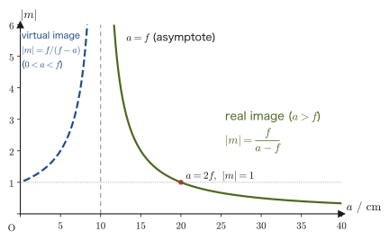

Chapter 15Lenses and Image Formation
When we put on eyeglasses, nearby letters become clear; when we bring a magnifying glass close, small letters look large; and when light passes through a camera lens, a distant scene is recorded as a reduced image on the film or the sensor—all of these are the work of the lens, a device that exploits the shape of a transparent object (mostly glass or plastic) to bend the paths of light rays deliberately, gathering the light from one point back into one point (or making it look as if it were gathered). The law of refraction of light that we learned in the previous chapter (Chapter 14)—the law by which light bends at a boundary surface—when applied to the lens, a “transparent body with two specially ground boundary surfaces (spherical surfaces),” gives us a device that projects the image of a distant object nearby, the image of a small object large, or the reverse.
In high school physics, too, you may remember memorizing the formula “$\dfrac{1}{a}+\dfrac{1}{b}=\dfrac{1}{f}$ (the lens equation, or the lens formula)” for a convex lens and “$\dfrac{1}{a}+\dfrac{1}{b}=-\dfrac{1}{f}$” for a concave lens, together with a sign convention (the image distance is $b\gt 0$ for a real image and $b\lt 0$ for a virtual image, and so on). Why does the sign flip between convex and concave lenses? Why does it work out to decide that “real images are positive and virtual images are negative”? High school textbooks often do not go into the reasons, and as a result many readers probably had no choice but to memorize these as “spell-like sign rules.” In this chapter, we derive the image formation by lenses from the geometry of light rays alone (ratios of the sides of similar triangles), without skipping a single line. First we measure distances as lengths (positive quantities) and derive the formula case by case; then we check that if we decide to take real images as positive and virtual images as negative, all the cases—convex lens, concave lens, real image, and virtual image—combine into a single equation. You will see that the sign convention is not a separate rule to be memorized but a device for gathering the case distinctions together.
Furthermore, we treat “image formation by two or more lenses combined,” which is often not covered in high school physics and is what lies inside telescopes, microscopes, and camera zoom lenses. For this we take up the idea of the sequential-imaging method, in which one follows the image one lens at a time, and the formula for the combined focal length when two lenses are placed in contact. At the end of the chapter, we see which parts of the formulas derived in this chapter are used in the design of familiar optical instruments—the magnifying glass, the camera, and the microscope.
- To put into a single table the definitions of the lens, the optical axis, and the focal point, together with the sign conventions for the object distance $a$, the image distance $b$, the focal length $f$, and the magnification $m$ (real and virtual images, convex and concave lenses, real and virtual objects, upright and inverted images), and to be able to use that table
- To derive the lens equation $\dfrac{1}{a}+\dfrac{1}{b}=\dfrac{1}{f}$ for a convex lens from ratios of similar triangles, without skipping a single line, both for the case where the object distance $a$ is larger than the focal length $f$ (an inverted real image) and for the case where it is smaller (an upright virtual image)
- To derive the lens equation for a concave lens (the same form $\dfrac{1}{a}+\dfrac{1}{b}=\dfrac{1}{f}$ under the sign convention, with $f\lt 0$) in the same way, and to understand the meaning of the magnification of the image, $m=-b/a$
- The procedure for finding the image formed by two lenses with the sequential-imaging method, which follows the image one lens at a time (including the treatment of a virtual object), and the derivation of the combined focal length $\dfrac{1}{f_{\mathrm{c}}}=\dfrac{1}{f_1}+\dfrac{1}{f_2}$ of two thin lenses placed in contact
- The angular magnification of a magnifying glass, the image formation in a camera, and the overall magnification of a microscope—how the lens equation connects to the design of actual optical instruments
Source notes: Yasuhide Mochizuki, Physics Notes: Waves, pp. 29–33.
15.1 Lenses, Focal Points, and the Sign Convention
In this section we define the lens and the focal point, the most important point characterizing a lens, and we first set out together the symbols we will use many times from now on (the object distance $a$, the image distance $b$, the focal length $f$, and the magnification $m$) and the sign conventions for them. The reason for the signs (why it works out to take real images as positive and virtual images as negative) will become clear in the derivations of Sections 15.2 and 15.3, so for now please take it as an agreement that “from here on we follow this rule.”
Definition 15.1: Lens and optical axis
When light enters a transparent object such as glass from the air, it is refracted at the boundary surface and changes its direction of travel (Chapter 14). A transparent body bounded by two spherical surfaces (or portions of spheres), made in order to exploit this property to gather light rays to a point (convergence) or to make them appear to spread out from a point (divergence), is called a lens. A lens that is thicker at the center than at the periphery is called a convex lens (it acts to converge light), and one that is thinner at the center than at the periphery is called a concave lens (it acts to spread light out). The straight line connecting the centers of the two spherical surfaces of the lens (the centers of the spheres) is called the optical axis, and below, whenever we consider a distance (height) in the direction perpendicular to the optical axis, we always take the optical axis as the reference. In this chapter we assume that the lens is so thin that its thickness can be ignored (the thin-lens approximation), and we further consider only rays that are close to the optical axis and make small angles with it (paraxial rays) (the paraxial approximation). Actual glass lenses have thickness, and rays at the periphery deviate from this approximation, but the formulas under these two approximations are good enough in almost all practical situations, such as cameras, eyeglasses, and microscopes.
Definition 15.2: Focal point and focal length
When rays parallel to the optical axis are incident on the lens from the left, in a convex lens all the rays converge after refraction at one point on the optical axis, and in a concave lens the refracted rays travel as if they had spread out from one point on the optical axis (so that, extended backward, they meet at one point). For a thin lens, the two points on the optical axis at the same distance $\abs{f}$ in front of and behind the center of the lens (two points symmetric about the center of the lens) are the focal points. The point on the object side (left) is called the front focal point $F$, and the point on the image side (right) is called the back focal point $F'$.
- Convex lens: light parallel to the optical axis converges at the back focal point $F'$ when it is incident from the left, and at the front focal point $F$ when it is incident from the right. Light that passes through the front focal point $F$ and enters the lens travels parallel to the optical axis after refraction.
- Concave lens: for light parallel to the optical axis that is incident from the left, the refracted light travels as if it had spread out from the front focal point $F$. Light that enters the lens heading toward the back focal point $F'$ travels parallel to the optical axis after refraction.
(If the medium on both sides of the lens is the same, for example air, the front and back focal lengths are equal.) The distance $\abs{f}\ [\mathrm{m}]$ from the center of the lens to the focal point is called the focal length. In this book, we distinguish the two kinds of lens by sign: the focal length of a convex lens is $f\gt 0$ and that of a concave lens is $f\lt 0$ (Table 15.1). The reciprocal of the focal length, $D=1/f\ [\mathrm{m^{-1}}]$, is called the power (its unit is the diopter, with symbol $\mathrm{D}$), a quantity in everyday use in lens prescriptions at an optician’s (for example, “a $-2.0\ \mathrm{D}$ lens for nearsightedness”).
Advanced Topic: Why do parallel rays converge at a single point? — Superposition of thin prisms
Since the surface of the lens is spherical, at a height $h$ from the optical axis the sphere is tilted slightly relative to the plane perpendicular to the optical axis. The tilt angle is about $h/R$ (for small angles), where $R$ is the radius of the sphere. Hence the lens at height $h$ can be regarded as a thin prism whose apex angle $\alpha$, formed by the two surfaces, is approximately $h/R_1+h/R_2$ (this is for a biconvex lens, with $R_1,R_2$ the magnitudes of the radii of the two spherical surfaces; the larger the height $h$, the larger the apex angle of the prism that the lens forms).
The angle through which a thin prism of refractive index $n$ bends light is found from the law of refraction of Chapter 14 as follows. Let $\theta_1$ be the angle at which light is incident on the first surface, $\theta_1'$ the angle of refraction there (the angle between the direction of travel inside the prism and the normal to the surface), $\theta_2'$ the angle of incidence on the second surface from inside the prism, and $\theta_2$ the angle at which the light emerges into the air. For small angles $\sin\theta\approx\theta$, so the law of refraction becomes $\theta_1=n\theta_1'$ and $\theta_2=n\theta_2'$. From the relations among the angles of the triangle formed by the ray inside the prism, $\theta_1'+\theta_2'=\alpha$, so the angle through which the light is bent (the angle of deviation) is
$$ \delta=\theta_1+\theta_2-\alpha=n(\theta_1'+\theta_2')-\alpha=(n-1)\alpha $$That is, light passing through the lens at height $h$ is bent toward the optical axis, since $\alpha\propto h$, by an angle proportional to $h$, namely $\delta=(n-1)h\left(\dfrac{1}{R_1}+\dfrac{1}{R_2}\right)$. So if we let the constant of proportionality be
$$ \frac{1}{f}=(n-1)\left(\frac{1}{R_1}+\frac{1}{R_2}\right) $$(the lensmaker’s formula for a thin biconvex lens in air), we get $\delta=h/f$. A ray that enters parallel to the optical axis at height $h$ is bent by the lens through the angle $\delta=h/f$, so it crosses the optical axis at the point at distance $h/\delta=f$ from the lens—independent of the height $h$. This is the reason why “parallel light converges at the single focal point $F'$.” For example, for a glass lens with $n=1.5$ and $R_1=R_2=20\ \mathrm{cm}$, $1/f=0.5\times(1/20+1/20)\ \mathrm{cm^{-1}}$ gives $f=20\ \mathrm{cm}$. In this way the focal length $f$ is determined by the material of the lens (the refractive index $n$) and the curvature of its surfaces (the radii $R_1,R_2$). For a concave lens the orientation of the apex angle is reversed, and $f\lt 0$.
However, this argument uses the paraxial approximation $\sin\theta\approx\theta$. For peripheral rays at large heights $h$ this approximation breaks down, and the rays deviate from the focal point (spherical aberration). A camera lens is made up of a combination of many lenses in order to cancel this deviation and other aberrations. All the formulas in this chapter hold under the thin-lens and paraxial-ray approximations. Also, if we combine the property that “light parallel to the optical axis converges at the focal point” with the property that a ray passing through the center of the lens goes straight (see the ray-diagram procedure at the end of Section 15.1), we can derive the image-formation formulas, as in the following Sections 15.2 and 15.3.
Definition 15.3: Real and virtual images
An image formed when the light coming from an object actually converges at one point after passing through the lens is called a real image. A real image can be projected onto a surface that the light actually reaches, such as a screen, a wall, or the sensor of a camera. In contrast, an image formed because the rays after passing through the lens do not actually converge at one point, but only the lines extending the rays backward (toward the object side) intersect at a single point, is called a virtual image. Since light does not actually reach the position of a virtual image, it cannot be projected onto a screen (a virtual image is an image visible only to the human eye, as if an object were at that position).
| Quantity | Positive ($+$) | Negative ($-$) |
|---|---|---|
| Focal length $f$ | Convex lens | Concave lens |
| Object distance $a$ | Real object (an object actually present in front of the lens) | Virtual object (the case where light that is converging behind the lens is intercepted partway; appears in Section 15.4) |
| Image distance $b$ | Real image (behind the lens; the light actually converges) | Virtual image (in front of the lens; the light does not converge, and the image forms only on the backward extension of the rays) |
| Magnification $m=-b/a$ | Upright (same orientation as the object) | Inverted (opposite orientation to the object) |
Definition 15.4: Sign convention for object and image distances, and the unified formula
Let the distance along the optical axis from the center of the lens to the object be the object distance $a$, and the distance from the center of the lens to the image be the image distance $b$. If we follow the sign conventions of Table 15.1 (real images and real objects positive, virtual images and virtual objects negative, $f$ of a convex lens positive and $f$ of a concave lens negative), then for both convex and concave lenses a single equation holds among the object distance, the image distance, and the focal length:
\begin{equation} \frac{1}{a}+\frac{1}{b}=\frac{1}{f} \label{eq:15-unified-lens} \end{equation}This equation is called the (unified form of the) lens equation for a thin lens. That this equation actually holds in every case will be verified in Section 15.2 (convex lens) and Section 15.3 (concave lens), as we derive it using similar triangles. High school textbooks and the like often write the convex-lens formula $1/a+1/b=1/f$ and the concave-lens formula $1/a+1/b=-1/f$ ($f$ being the magnitude of the focal length) separately, but once the sign of $f$ is fixed as in Table 15.1 they are the same equation, and in this book from here on we always write them in the unified form of Eq. \eqref{eq:15-unified-lens}.
Definition 15.5: Magnification
Let the height of the object (its distance from the optical axis, taken positive above the optical axis) be $h_A$ and the height of the image be $h_B$. Then
$$ m=\frac{h_B}{h_A}=-\frac{b}{a} $$is called the (signed) magnification. The quantity $\abs{m}=\abs{h_B/h_A}=\abs{b/a}$ tells how many times larger the image is than the object (that $\abs{h_B/h_A}=b/a$ will be shown in the derivation in Section 15.2). If $\abs{m}\gt 1$, the image is larger than the object, and if $\abs{m}\lt 1$, it is smaller than the object. The sign represents the orientation of the image: if $m\lt 0$, the image is upside down (or left–right reversed) relative to the object (inverted), and if $m\gt 0$, it has the same orientation (upright). For a real image ($b\gt 0$) we have $m\lt 0$, so it is inverted, and for a virtual image ($b\lt 0$) we have $m\gt 0$, so it is upright. In short, it suffices to remember: “if $a$ and $b$ have the same sign, the image is inverted; if they have opposite signs, it is upright.”
Intuition: The ray-diagram procedure — three reference rays
The position of an image formed by a lens can be found not only by calculation but also by a ray diagram (carefully drawing the rays). Of the countless rays leaving the tip of the object (a point away from the optical axis), choose and draw the following three, whose directions of travel are easy to determine. The tip of the image is then found as their intersection (for a real image) or as the intersection of the lines extended backward from them (for a virtual image).
- A ray parallel to the optical axis—after refraction it passes through the back focal point $F'$ (convex lens). For a concave lens, the ray diverges after refraction so that its backward extension passes through the front focal point $F$.
- A ray through the center of the lens—near the center of a thin lens, the front and back surfaces are nearly parallel, so that part of the lens can be regarded as a thin plate, and the change of direction caused by refraction is negligibly small. This ray goes straight on without changing direction (this is common to convex and concave lenses).
- A ray through the front focal point $F$ (convex lens)—after refraction it travels parallel to the optical axis (the reverse of ray 1). For a concave lens, a ray heading toward the back focal point $F'$ becomes parallel to the optical axis after refraction.
Figure 15.2 shows these three rays actually drawn for the object distance $a=2f$ (exactly twice the focal length). Many readers will be familiar with this from high school physics, but choosing any two of the three rays determines the position of the image (the third can be used to check the construction). The construction with the three rays for a concave lens is shown in Figure 15.6 (Section 15.3). In these diagrams the convention is to draw the path that light actually follows as a solid line, and the portions that are merely extensions, where no light actually passes, as a dashed line.
Example 15.1: Power of eyeglass lenses
(1) Find the power $D$ of a convex lens with focal length $f=25\ \mathrm{cm}$. (2) Find the focal length $f$ of an eyeglass lens for nearsightedness whose power is $D=-2.0\ \mathrm{D}$, and answer whether it is a convex lens or a concave lens.
Solution. (1) By Definition 15.2, $D=1/f$. Since the power is defined as the reciprocal of the focal length in meters, we first convert to $f=25\ \mathrm{cm}=0.25\ \mathrm{m}$.
$$ D=\frac{1}{f}=\frac{1}{0.25\ \mathrm{m}}=4.0\ \mathrm{D} $$(2) Solving $D=1/f$ for $f$ gives $f=1/D$, so
$$ f=\frac{1}{D}=\frac{1}{-2.0\ \mathrm{D}}=-0.50\ \mathrm{m}=-50\ \mathrm{cm} $$Since $f\lt 0$, by the convention of Table 15.1 this is a concave lens (many readers will probably have heard in science class, or seen on a prescription from an eyeglass shop—where the $\mathrm{S}$ in a notation such as “$\mathrm{S}-2.00$” means spherical power—that eyeglass lenses for nearsightedness are concave lenses).
15.2 Derivation of the Lens Equation for a Convex Lens
In this section, for a convex lens, we derive the relation among the object distance $a$, the image distance $b$, and the focal length $f$ (the lens equation) solely from ratios of sides of similar triangles. Depending on the position of the object there are two cases, (i) $a\gt f$ (an inverted real image is formed) and (ii) $0\lt a\lt f$ (an upright virtual image is formed), and we examine them in turn. In the derivations of this section we treat the distances $a,b,f$ for the time being as lengths (positive quantities), and for the virtual image we convert to signed quantities at the end.
Derivation: The lens equation for a convex lens — (i) The case $a\gt f$ (inverted real image)
As in Figure 15.3, consider two rays leaving the tip of the object. The first passes through the center of the lens and goes straight (reference ray 2 of the ray-diagram procedure in Section 15.1). The second enters parallel to the optical axis and, after refraction, passes through the back focal point $F'$ (reference ray 1). The point where these two rays meet is the tip of the image.
First focus on the first ray (the straight ray through the center). Compare the right triangle formed by the three points—the tip of the object, the foot of the object (the point on the optical axis), and the center of the lens—with the right triangle formed by the three points—the tip of the image, the foot of the image, and the center of the lens. In both, the angles at the center of the lens are equal, since they are vertical angles (opposite angles formed by the same two straight lines), and each triangle has a right angle at the optical axis. Therefore the two right triangles have two pairs of equal angles (the AA similarity criterion), and hence are similar. Since the ratios of all corresponding sides of similar figures are equal, the proportion
$$ a:b=h_A:h_B \qquad(\text{from the similar triangles of the ray through the center}) $$holds.
Next focus on the second ray (the parallel ray → the ray through $F'$). Compare the right triangle formed by the three points—the point on the lens plane (at height $h_A$, where the ray parallel to the optical axis enters the lens), the center of the lens, and $F'$ (the right angle is at the center of the lens)—with the right triangle formed by the three points—the tip of the image, the foot of the image, and $F'$ (the right angle is at the foot of the image). In these two right triangles as well, the angles at $F'$ are equal as vertical angles, and each has a right angle at the optical axis, so by the AA similarity criterion they are similar in the same way. Therefore the proportion
$$ f:(b-f)=h_A:h_B \qquad(\text{from the similar triangles of the ray through }F'\text{ (the parallel ray)}) $$holds (the distance from the lens to $F'$ is $f$ and the distance from $F'$ to the image is $b-f$, as the dimension lines in Figure 15.3 show).
Since the two proportions have the same right-hand side $h_A:h_B$, we obtain
$$ a:b=f:(b-f) $$The proportion $a:b=f:(b-f)$ can be rewritten, by “the product of the means equals the product of the extremes” (the basic property of proportions), as
$$ b\,f=a\,(b-f) $$Dividing both sides by $abf$ (the quantities $a,b,f$ are all positive and none is 0), we obtain
$$ \frac{bf}{abf}=\frac{a(b-f)}{abf} \qquad\therefore\quad \frac{1}{a}=\frac{b-f}{bf} $$Splitting the right-hand side into a difference of two fractions, $\dfrac{b-f}{bf}=\dfrac{b}{bf}-\dfrac{f}{bf}=\dfrac{1}{f}-\dfrac{1}{b}$, we obtain
$$ \frac{1}{a}=\frac{1}{f}-\frac{1}{b} \qquad\therefore\quad \frac{1}{a}+\frac{1}{b}=\frac{1}{f} $$This is the lens equation of a convex lens for the case $a\gt f$.
∎
As for the magnification, from $a:b=h_A:h_B$ obtained from the similar triangles of the first ray, the size of the image is $\abs{h_B/h_A}=b/a$. A real image ($b\gt 0$) is inverted, so by Definition 15.5 the signed magnification is $m=-b/a$ (negative). Furthermore, since $1/a+1/b=1/f$ gives $b=af/(a-f)$,
$$ \abs{m}=\frac{b}{a}=\frac{f}{a-f} $$we see that $\abs{m}$ becomes larger the closer $a$ is to $f$ ($\abs{m}\to\infty$ as $a\to f^+$), and $\abs{m}$ becomes smaller the larger $a$ is ($\abs{m}\to0$ as $a\to\infty$). In particular,
$$ \begin{cases} f\lt a\lt 2f \text{ implies } & \abs{m}\gt 1 \\ a=2f \text{ implies } & \abs{m}=1 \\ a\gt 2f \text{ implies } & \abs{m}\lt 1 \end{cases} $$These relations hold (substituting the boundary value $a=2f$ gives $\abs{m}=f/(2f-f)=1$, which indeed agrees). The relation between this $\abs{m}$ and $a$, together with case (ii) ($0\lt a\lt f$), is shown as a graph in Figure 15.5, which follows Formula 15.1.
Derivation: The lens equation for a convex lens — (ii) The case $0\lt a\lt f$ (upright virtual image)
As in Figure 15.4, when the object distance is smaller than the focal length ($0\lt a\lt f$), the rays do not meet behind the lens but keep diverging. However, if the two rays are extended backward in front of the lens (toward the object side), they meet at a single point. This intersection point is the tip of the virtual image. For now, we denote the distance from the lens to the virtual image by the length (a positive quantity) $\abs{b}$ (under the convention of Table 15.1 the image distance $b$ of a virtual image is negative, so $\abs{b}=-b$).
We compare the similar triangles formed by the ray through the center (the tip of the object, the foot of the object, and the center of the lens; and the tip of the virtual image, the foot of the virtual image, and the center of the lens). In this case the object and the virtual image lie on the same side of the lens, and the “angle at the center of the lens” of the two triangles is the common angle that the single straight line through the tip of the object and the tip of the virtual image makes with the optical axis (it is not a pair of vertical angles as in (i)). Since both triangles have a right angle at the optical axis, they are similar by the AA similarity criterion, and
$$ a:\abs{b}=h_A:h_B $$holds. Next, we turn to the parallel ray. For exactly the same reason as in case (i) (the property of reference ray 1 in Section 15.1: for a thin lens, a ray parallel to the optical axis is refracted so as to always pass through the back focal point $F'$, regardless of the position of the object), after refraction this ray travels along a single straight line heading toward the back focal point $F'$ (on the optical axis, at a distance $f$ behind the lens). This line is one and the same straight line both for the actual path after refraction (behind the lens) and for the backward extension (in front of the lens, on the side containing the virtual image). So we compare two right triangles. One is formed by three points: the point on the lens plane (at height $h_A$), the center of the lens (a point on the optical axis, the vertex of the right angle), and $F'$. The other is formed by three points: the tip of the virtual image, the foot of the virtual image, and $F'$. The angles at $F'$ in the two triangles are equal (as the common angle made by the same single straight line), and both triangles have a right angle at the optical axis, so they are similar by the AA similarity criterion, and
$$ f:(f+\abs{b})=h_A:h_B $$holds (the distance from $F'$ to the center of the lens is $f$, and the foot of the virtual image lies a further $\abs{b}$ away on the opposite side of the lens, so the distance from $F'$ to the foot of the virtual image is $f+\abs{b}$, as shown by the dimension lines in Figure 15.4). Since the right-hand sides of the two proportions are both $h_A:h_B$, we have
$$ a:\abs{b}=f:(f+\abs{b}) $$from which, by “the product of the means equals the product of the extremes,”
$$ a\,(f+\abs{b})=\abs{b}\,f $$holds. Dividing both sides by $a\abs{b}f$ gives
$$ \frac{1}{a}=\frac{f+\abs{b}}{\abs{b}f}=\frac{f}{\abs{b}f}+\frac{\abs{b}}{\abs{b}f}=\frac{1}{\abs{b}}+\frac{1}{f} $$Subtracting $1/\abs{b}$ from both sides, we obtain
$$ \frac{1}{a}-\frac{1}{\abs{b}}=\frac{1}{f} $$Now, if we rewrite the image distance of the virtual image as the signed quantity $b=-\abs{b}$ ($b\lt 0$), as in the convention of Table 15.1, then $-1/\abs{b}=1/b$, so the relation above takes exactly the same form as
$$ \frac{1}{a}+\frac{1}{b}=\frac{1}{f} $$In other words, if we treat the image distance as a signed quantity, the same unified formula $1/a+1/b=1/f$ (Eq. \eqref{eq:15-unified-lens}) as in case (i) holds in this case as well, unchanged. From here on, this book always treats $b$ as a signed quantity. Note also that from $a:\abs{b}=h_A:h_B$ we have $\abs{h_B/h_A}=\abs{b}/a$, and the signed magnification of the virtual image ($b\lt 0$) is $m=-b/a\gt 0$ (upright).
∎
Formula 15.1: The lens equation for a convex lens (unified form)
In image formation by a convex lens (focal length $f\gt 0$), the object distance $a$ ($a\gt 0$ for a real object) and the image distance $b$ ($b\gt 0$ for a real image, $b\lt 0$ for a virtual image) satisfy, regardless of how $a$ compares with $f$,
$$ \frac{1}{a}+\frac{1}{b}=\frac{1}{f} $$(the same equation as Eq. \eqref{eq:15-unified-lens}). The magnification is $m=-b/a$; for $a\gt f$ (inverted real image), $\abs{m}=f/(a-f)$, and for $0\lt a\lt f$ (upright virtual image), $\abs{m}=f/(f-a)$. In particular, $\abs{m}=1$ at $a=2f$, $\abs{m}\gt 1$ for $f\lt a\lt 2f$, and $\abs{m}\lt 1$ for $a\gt 2f$ (Figure 15.5).
For $0\lt a\lt f$ we have $0\lt f-a\lt f$, so $\abs{m}=f/(f-a)\gt 1$; that is, the virtual image is always larger than the object. As $a\to 0$, $\abs{m}\to1$, and as $a\to f-0$, $\abs{m}\to\infty$.

Discussion: What happens to the image when $a=f$?
If we let $a\to f$ in Eq. \eqref{eq:15-unified-lens}, then $1/b=1/f-1/a\to0$, so $b\to\infty$. When the object is placed exactly at the front focal point, the ray that leaves the tip of the object and travels parallel to the optical axis passes through the back focal point $F'$ after refraction, while the ray through the center goes straight. When $a=f$, the slope of the ray through the center is $h_A/a=h_A/f$, and if we also compute the slope of the line followed by the parallel ray after refraction (which passes through $F'$), it is the same $h_A/f$—that is, the two rays become exactly parallel and never meet, however far they travel behind the lens. If we regard two parallel lines as “meeting at infinity,” this is consistent with $b=\infty$ (the real image forms at infinity). Physically, it is best understood not as the image vanishing, but as a state in which no image is formed however far the screen is moved from the lens (the in-focus position is infinitely far away). When $a$ approaches $f$ from outside, the real image recedes to positive infinity ($b\to+\infty$), and when $f$ is approached from inside, the virtual image recedes to negative infinity on the same side as the object ($b\to-\infty$), so at $a=f$ the image switches “from a real image to a virtual image” (this is why the curve for the convex lens in Figure 15.7 is cut at $a=f$).
Conversely, when the object is infinitely far away ($a\to\infty$), $1/a\to0$ gives $1/b=1/f$, that is, $b=f$. When we focus sunlight onto a sheet of paper with a magnifying glass, placing the paper exactly at the focal length $f$ from the lens produces the smallest, brightest image (the real image of the Sun)—because the Sun can be regarded as being at infinity. The cases $a=f$ (image at infinity) and $a=\infty$ (image at the focal point) are related by tracing the path of the light in the reverse direction (the reversibility of light).
Example 15.2: Real image formed by a convex lens (case $a\gt 2f$)
An object is placed $a=30\ \mathrm{cm}$ in front of a convex lens of focal length $f=10\ \mathrm{cm}$. Find the image position $b$ and the magnification $m$, and answer whether the image is real or virtual and whether it is inverted or upright.
Solution. Below, all lengths are computed in $\mathrm{cm}$. Since $a=30\ \mathrm{cm}\gt 2f=20\ \mathrm{cm}$, this is the case $a\gt 2f$ of Formula 15.1, and we expect $\abs{m}\lt 1$. Substituting the numerical values into Eq. \eqref{eq:15-unified-lens} gives
$$ \frac{1}{30}+\frac{1}{b}=\frac{1}{10} \qquad\therefore\quad \frac{1}{b}=\frac{1}{10}-\frac{1}{30}=\frac{3-1}{30}=\frac{2}{30}=\frac{1}{15} $$so $b=15\ \mathrm{cm}$. Since $b\gt 0$, the image is a real image, formed $15\ \mathrm{cm}$ behind the lens. By Definition 15.5, the magnification is
$$ m=-\frac{b}{a}=-\frac{15}{30}=-0.5 $$and $\abs{m}=0.5\lt 1$ (consistent with the expectation for $a\gt 2f$). Since $m\lt 0$, the image is an inverted real image, 0.5 times the size of the object.
Example 15.3: Real image formed by a convex lens (case $f\lt a\lt 2f$)
An object is placed $a=15\ \mathrm{cm}$ in front of a convex lens of focal length $f=10\ \mathrm{cm}$. Find the image position $b$ and the magnification $m$.
Solution. Lengths are computed in $\mathrm{cm}$. Since $f=10\ \mathrm{cm}\lt a=15\ \mathrm{cm}\lt 2f=20\ \mathrm{cm}$, Formula 15.1 tells us to expect $\abs{m}\gt 1$.
$$ \frac{1}{15}+\frac{1}{b}=\frac{1}{10} \qquad\therefore\quad \frac{1}{b}=\frac{1}{10}-\frac{1}{15}=\frac{3-2}{30}=\frac{1}{30} $$so $b=30\ \mathrm{cm}$ (a real image). The magnification is
$$ m=-\frac{b}{a}=-\frac{30}{15}=-2.0 $$and $\abs{m}=2.0\gt 1$, which confirms numerically that for $f\lt a\lt 2f$ the image is larger than the object (Formula 15.1). Since $m\lt 0$, it is an inverted real image.
Example 15.4: Virtual image formed by a convex lens (the magnifying glass case)
An object is placed $a=6\ \mathrm{cm}$ in front of a convex lens of focal length $f=10\ \mathrm{cm}$. Find the image position $b$ and the magnification $m$, and answer whether the image is real or virtual and whether it is inverted or upright.
Solution. Lengths are computed in $\mathrm{cm}$. Since $a=6\ \mathrm{cm}\lt f=10\ \mathrm{cm}$, this is case (ii) of Section 15.2 (upright virtual image). From Eq. \eqref{eq:15-unified-lens},
$$ \frac{1}{6}+\frac{1}{b}=\frac{1}{10} \qquad\therefore\quad \frac{1}{b}=\frac{1}{10}-\frac{1}{6}=\frac{3-5}{30}=-\frac{2}{30}=-\frac{1}{15} $$so $b=-15\ \mathrm{cm}$. Since $b\lt 0$, the image is a virtual image, formed $15\ \mathrm{cm}$ in front of the lens (on the same side as the object). The magnification is
$$ m=-\frac{b}{a}=-\frac{-15}{6}=+2.5 $$and since $m\gt 0$ the image is upright and 2.5 times the size of the object. This also agrees with $\abs{m}=f/(f-a)=10/(10-6)=2.5$ from Formula 15.1, and confirms that the virtual image is larger than the object ($\abs{m}\gt 1$). When we read text enlarged through a magnifying glass, this is the situation (we are viewing an upright, enlarged virtual image).
Example 15.5: How does the image move as the object approaches the focal point?
An object is placed $a=30\ \mathrm{cm}$ in front of a convex lens of focal length $f=10\ \mathrm{cm}$ and is then moved closer to the lens. Find the image position $b$ and the magnification $m$, first when the object approaches the focal point $a=f$ from outside, $a=20,15,12,11,10.5,10.1\ \mathrm{cm}$, and then when it is moved inside the focal point, $a=9.9,9,8,5\ \mathrm{cm}$. Also explain what happens to the image as the object passes through $a=f$.
Solution. Lengths are computed in $\mathrm{cm}$. From the unified formula, $b=\dfrac{af}{a-f}=\dfrac{10a}{a-10}$ and $m=-\dfrac{b}{a}=-\dfrac{10}{a-10}$. Computing for each $a$ gives the following table.
$$ \begin{array}{c|ccccccc|ccc} a\ /\ \mathrm{cm} & 30 & 20 & 15 & 12 & 11 & 10.5 & 10.1 & 9.9 & 9 & 8 \\ \hline b\ /\ \mathrm{cm} & 15 & 20 & 30 & 60 & 110 & 210 & 1010 & -990 & -90 & -40 \\ m & -0.5 & -1 & -2 & -5 & -10 & -20 & -100 & +100 & +10 & +5 \end{array} $$(For $a=5\ \mathrm{cm}$, $b=10\times5/(5-10)=-10\ \mathrm{cm}$ and $m=+2$.) As $a$ approaches $f$ from outside the focal point, the real image moves rapidly away from the lens, $b=15\to20\to30\to60\to110\to210\to1010\ \mathrm{cm}$, and the magnitude of the magnification also grows. At $a=f$ exactly, $1/b=1/f-1/a=0$, so $b=\infty$; that is, the light becomes parallel rays and forms no image. When $a$ goes just slightly inside $f$, the real image is replaced by a virtual image close to negative infinity, $b=-990\ \mathrm{cm}$; from there, as $a$ decreases, the virtual image approaches the object, $b=-90\to-40\to-10\ \mathrm{cm}$, and the magnification also decreases, $+100\to+10\to+5\to+2$. That is, across $a=f$ “the real image flies off to positive infinity and the virtual image returns from negative infinity”; this is the meaning of the curve for the convex lens in Figure 15.7 (which has an asymptote at $a=f$).
15.3 Derivation of the Lens Equation for a Concave Lens
A concave lens is thinner at its center than at its edges and acts to spread light out (to make it diverge) (Definition 15.1). We derive what kind of image a concave lens forms by exactly the same method as for a convex lens (ratios of the sides of similar triangles). In this section as well, we treat the distances $a$, $\abs{b}$, $\abs{f}$ as lengths (positive quantities) and convert them to signed quantities at the end.
Derivation: The lens equation for a concave lens
As in Figure 15.6, a ray that leaves the tip of the object and enters parallel to the optical axis diverges after refraction as if it had spread out from the front focal point $F$ (on the object side of the lens, at distance $\abs{f}$). Another ray, which passes through the center of the lens, goes straight. These two rays do not meet behind the lens, but if we extend the ray that was parallel to the axis backward, it passes through $F$ and meets the ray through the center (along its actual path) at a single point. This intersection point is the tip of the virtual image, and for the time being we denote the distance from the lens to the virtual image by the length (positive quantity) $\abs{b}$.
The two similar triangles formed by the ray through the center (the tip of the object, the foot of the object, and the center of the lens; and the tip of the virtual image, the foot of the virtual image, and the center of the lens) have equal angles at the center of the lens, since the object and the virtual image are on the same side of the lens, so that the angle is a common angle formed by the same straight lines; and each has a right angle with the optical axis. Hence they are similar by the AA similarity criterion, and
$$ a:\abs{b}=h_A:h_B $$holds. Also, the right triangle formed by the point where the parallel ray passes through the lens (at height $h_A$), the center of the lens, and the front focal point $F$ (the right angle is at the center of the lens), and the right triangle formed by the tip of the virtual image, the foot of the virtual image, and $F$ (the right angle is at the foot of the virtual image) have equal angles at $F$ as a common angle formed by the same straight line (the dashed line), and each also has a right angle with the optical axis; so they satisfy the AA similarity criterion, and
$$ \abs{f}:(\abs{f}-\abs{b})=h_A:h_B $$holds (that the distance from $F$ to the virtual image is $\abs{f}-\abs{b}$ follows from the fact that $F$ is at distance $\abs{f}$ from the lens and the virtual image is at distance $\abs{b}$ from the lens, and that for a concave lens $\abs{b}\lt \abs{f}$ always holds, so that $\abs{f}-\abs{b}\gt 0$. We will check this again at the end of the calculation). Since the right-hand sides of the two proportions are both $h_A:h_B$, we obtain
$$ a:\abs{b}=\abs{f}:(\abs{f}-\abs{b}) $$and, by “the product of the means equals the product of the extremes,”
$$ \abs{b}\,\abs{f}=a\,(\abs{f}-\abs{b}) $$holds. Dividing both sides by $a\abs{b}\abs{f}$, we get
$$ \frac{1}{a}=\frac{\abs{f}-\abs{b}}{\abs{b}\abs{f}}=\frac{\abs{f}}{\abs{b}\abs{f}}-\frac{\abs{b}}{\abs{b}\abs{f}}=\frac{1}{\abs{b}}-\frac{1}{\abs{f}} $$Rearranging, we obtain
$$ \frac{1}{a}-\frac{1}{\abs{b}}=-\frac{1}{\abs{f}} $$Since the right-hand side is negative, $1/a-1/\abs{b}\lt 0$, that is, $1/a\lt 1/\abs{b}$, and therefore $a\gt \abs{b}$; so we see at once that the magnitude of the magnification, $\abs{h_B/h_A}=\abs{b}/a$, is always less than 1 (this does not depend on the values of $a$ or $f$).
Now, to match the sign convention of Table 15.1, we rewrite the image distance of the virtual image as the signed quantity $b=-\abs{b}$ ($b\lt 0$) and the focal length of the concave lens as the signed quantity $f=-\abs{f}$ ($f\lt 0$). Since $-1/\abs{b}=1/b$ and $-1/\abs{f}=1/f$, the relation above takes the form
$$ \frac{1}{a}+\frac{1}{b}=\frac{1}{f} $$That is, the unified formula (Eq. \eqref{eq:15-unified-lens}) holds as it is for a concave lens as well. The “$1/a+1/b=-1/f$” that appears in high school textbooks and elsewhere (where $f$ is the magnitude of the focal length) is the form $\;1/a+1/b=-1/\abs{f}$ (with $b$ signed) that we had before rewriting with $f=-\abs{f}$.
Finally, for $a\gt0$, comparing $\abs{b}=a\abs{f}/(a+\abs{f})$ (obtained by solving the equation above for $\abs{b}$) with $\abs{f}$, we find
$$ \abs{f}-\abs{b}=\abs{f}-\frac{a\abs{f}}{a+\abs{f}}=\frac{\abs{f}(a+\abs{f})-a\abs{f}}{a+\abs{f}}=\frac{\abs{f}^2}{a+\abs{f}}\gt 0 $$so indeed $\abs{b}\lt\abs{f}$ (that is, $\abs{f}-\abs{b}\gt 0$) holds, and what we assumed along the way is confirmed. Moreover, since $a-\abs{b}=a-\dfrac{a\abs{f}}{a+\abs{f}}=\dfrac{a^2}{a+\abs{f}}\gt 0$, this expression also lets us confirm that $a\gt\abs{b}$ ($\abs{m}\lt 1$) always holds, regardless of the values of the object distance $a$ and the focal length $\abs{f}$.
∎
Formula 15.2: Lens equation for a concave lens
For image formation by a concave lens (focal length $f\lt 0$; the magnitude of the focal length is $\abs{f}=-f$), the unified formula
$$ \frac{1}{a}+\frac{1}{b}=\frac{1}{f}\qquad(f\lt 0) $$holds as it is if signed quantities are used. Rewriting this in terms of the lengths (positive quantities) $\abs{b}=-b$ and $\abs{f}=-f$, we obtain
$$ \frac{1}{a}-\frac{1}{\abs{b}}=-\frac{1}{\abs{f}} $$The image formed by a concave lens is, regardless of the object position $a$, always an upright virtual image and always smaller than the object ($0\lt m=\abs{f}/(a+\abs{f})\lt 1$)—unlike a convex lens, it never happens that “the image is sometimes real and sometimes virtual, depending on the range of $a$.” This is the major difference from a convex lens. Figure 15.7 compares how the image distance $b$ changes with the object distance $a$ for a convex lens and a concave lens with focal lengths of the same magnitude, and Table 15.2 summarizes how images are formed by convex and concave lenses.
| Lens | Object distance $a$ | Image position $b$ | Type of image | Magnification $m=-b/a$ |
|---|---|---|---|---|
| Convex lens ($f\gt 0$) | $a\gt 2f$ | $f\lt b\lt 2f$ | Reduced, inverted real image | $-1\lt m\lt 0$ |
| $a=2f$ | $b=2f$ | Same-size, inverted real image | $m=-1$ | |
| $f\lt a\lt 2f$ | $b\gt 2f$ | Enlarged, inverted real image | $m\lt -1$ | |
| $a=f$ | $b=\infty$ | No image (parallel rays) | — | |
| $0\lt a\lt f$ | $b\lt -a$ (in front of the object) | Enlarged, upright virtual image | $m\gt 1$ | |
| Concave lens ($f\lt 0$) | All $a\gt 0$ | $-\abs{f}\lt b\lt 0$ | Reduced, upright virtual image | $0\lt m\lt 1$ |
![Graph of the image distance b versus the object distance a, comparing a convex lens (f=+10cm) and a concave lens (f=-10cm) whose focal lengths have the same magnitude. The convex lens has an asymptote at a=f; b is negative (virtual image) for a smaller than f and positive (real image, decreasing monotonically as a increases and approaching f) for a larger than f. The concave lens gives a curve that is continuous regardless of a, with b always negative (virtual image), and b approaches -10cm as a becomes large](figs/ch15_fig15-7.svg)
Example 15.6: Virtual image formed by a concave lens
An object is placed $30\ \mathrm{cm}$ in front of a concave lens whose focal length has magnitude $20\ \mathrm{cm}$. Find the image position $b$ and the magnification $m$.
Solution. We compute lengths in $\mathrm{cm}$. Since the lens is concave, by the sign convention of Table 15.1 we use $f=-20\ \mathrm{cm}$ in the unified formula, Eq. \eqref{eq:15-unified-lens}. With $a=30\ \mathrm{cm}$,
$$ \frac{1}{30}+\frac{1}{b}=\frac{1}{-20} \qquad\therefore\quad \frac{1}{b}=-\frac{1}{20}-\frac{1}{30}=-\frac{3}{60}-\frac{2}{60}=-\frac{5}{60}=-\frac{1}{12} $$so $b=-12\ \mathrm{cm}$. Since $b\lt 0$, the image is virtual, and it is formed at a position $12\ \mathrm{cm}$ from the lens on the same side as the object (in front of the lens). The magnification is
$$ m=-\frac{b}{a}=-\frac{-12}{30}=+0.4 $$which, as Formula 15.2 states, satisfies $0\lt m\lt 1$ (an upright virtual image, 0.4 times the size of the object).
15.4 Image Formation by Multiple Lenses — Sequential Imaging and Lenses in Contact
So far, we have considered image formation by a single lens only. Most real optical instruments such as cameras, microscopes, and telescopes use several lenses in combination. In this section, we treat image formation by two lenses $L_1,L_2$ arranged with their optical axes coinciding, in two cases: (1) the two lenses are separated (the sequential-imaging method), and (2) the two lenses are placed in contact.
15.4.1 The sequential-imaging method
To find the position of the final image of an object formed by two lenses $L_1,L_2$, it suffices to apply Formula 15.1 (or 15.2) twice, in order.
Definition 15.6: Procedure of the sequential-imaging method
Step 1. Consider only the object, and find the position $b_1$ of the image $P_1$ formed by $L_1$ using Formula 15.1 (or 15.2).
Step 2. Regard $P_1$ as the object for $L_2$ this time. From the distance $b_1$ from $L_1$ to $P_1$ and the distance $d$ between the lenses $L_1,L_2$ (the lens separation), find the object distance $a_2$ seen from $L_2$ as
$$ a_2=-(b_1-d)=d-b_1 $$Note the sign: if $P_1$ lies in front of $L_2$ (on the $L_1$ side), that is, $b_1\lt d$, then $a_2\gt 0$ (an ordinary real object for $L_2$). If $P_1$ lies behind $L_2$ ($b_1\gt d$; this is the case where the light from $L_1$ is intercepted by $L_2$ before it actually converges), then $a_2\lt 0$ (a virtual object in Table 15.1). Even when $L_1$ forms a virtual image ($b_1\lt 0$, with $P_1$ formed in front of $L_1$), $a_2=d-b_1=d+\abs{b_1}\gt 0$ can be used as it stands, and the image becomes a real object for $L_2$.
Step 3. Using $a_2$, apply Formula 15.1 (or 15.2) once more to find the position $b_2$ of the final image $P_2$ formed by $L_2$.
The overall magnification is the product of the magnifications of the individual lenses:
\begin{equation} m=m_1m_2=\left(-\frac{b_1}{a_1}\right)\left(-\frac{b_2}{a_2}\right) \label{eq:15-two-lens-mag} \end{equation}(Since the magnification of each lens is the ratio “image height / object height,” multiplying the two magnifications gives the overall magnification—a natural result.) The size is $\abs{m}=\abs{b_1/a_1}\abs{b_2/a_2}$, and the image is inverted if $m\lt 0$ and upright if $m\gt 0$.
Why can the same formula be used even for a virtual object ($a_2\lt 0$)?
What we derived in Sections 15.2 and 15.3 were formulas for real objects ($a\gt 0$) only. Let us check why we may substitute $a_2\lt 0$, by using the fact that the path of light can also be traced in the reverse direction (the reversibility of light). When $P_1$ lies a distance $\abs{a_2}$ behind $L_2$, the light leaving $L_1$ enters $L_2$ while converging toward $P_1$.
When $L_2$ is a convex lens ($f_2\gt 0$). The converging light is bent further by $L_2$ and gathers at a point $P_2$ short of $P_1$, at a distance $b_2\;(\lt\abs{a_2})$ behind the lens. Tracing this path of light in reverse, light emitted from a (real) object placed at $P_2$ passes through $L_2$ in the reverse direction and forms a virtual image at $P_1$. This is exactly the situation of Section 15.2(ii) (an object inside the focal point of a convex lens forms a virtual image farther away than the object), with object distance $b_2$ and distance to the virtual image $\abs{a_2}$. Applying the result of Section 15.2(ii), $\dfrac{1}{a}-\dfrac{1}{\abs{b}}=\dfrac{1}{f}$, with $a\to b_2$ and $\abs{b}\to\abs{a_2}$, we find that
$$ \frac{1}{b_2}-\frac{1}{\abs{a_2}}=\frac{1}{f_2} \qquad\therefore\quad \frac{1}{a_2}+\frac{1}{b_2}=\frac{1}{f_2}\quad(a_2=-\abs{a_2}) $$holds.
When $L_2$ is a concave lens ($f_2\lt 0$). For example, in Illustration 15.1 ($a_2=-8\ \mathrm{cm}$, $f_2=-10\ \mathrm{cm}$) the final image $P_2$ is formed behind the lens ($b_2\gt 0$). Tracing the path in reverse, $P_1$ is the virtual image that an object at $P_2$ forms through the concave lens. Applying the result of Section 15.3, $\dfrac{1}{a}-\dfrac{1}{\abs{b}}=-\dfrac{1}{\abs{f}}$, with $a\to b_2$ and $\abs{b}\to\abs{a_2}$, gives $\dfrac{1}{b_2}-\dfrac{1}{\abs{a_2}}=-\dfrac{1}{\abs{f_2}}$, which again leads to $\dfrac{1}{a_2}+\dfrac{1}{b_2}=\dfrac{1}{f_2}$. The other cases of virtual objects likewise reduce to the unified formula if we trace the path of light in reverse. (The thin-lens formula is a relation derived from the law of refraction, so it holds whether the object is a real object or a virtual object.)
Illustration 15.1: A combination of two lenses
A convex lens $L_1$ of focal length $f_1=12\ \mathrm{cm}$ and a concave lens $L_2$ whose focal length has magnitude $10\ \mathrm{cm}$ ($f_2=-10\ \mathrm{cm}$) are placed $12\ \mathrm{cm}$ apart. When a light source is placed $30\ \mathrm{cm}$ in front of $L_1$, where and what kind of image is formed?
Solution. Below, all lengths are computed in $\mathrm{cm}$. As Step 1 of Definition 15.6, find the position $b_1$ of the image formed by $L_1$ alone. Since the object distance $a_1=30\ \mathrm{cm}$ is greater than the focal length $f_1=12\ \mathrm{cm}$, an inverted real image should be formed.
$$ \frac{1}{30}+\frac{1}{b_1}=\frac{1}{12} \qquad\therefore\quad \frac{1}{b_1}=\frac{1}{12}-\frac{1}{30}=\frac{5-2}{60}=\frac{3}{60}=\frac{1}{20} $$Hence $b_1=20\ \mathrm{cm}$. The inverted real image formed by $L_1$ is located $20\ \mathrm{cm}$ behind $L_1$.
As Step 2, find the object distance $a_2$ seen from $L_2$. The separation between $L_1$ and $L_2$ is $12\ \mathrm{cm}$, and the image formed by $L_1$ would have been located $20\ \mathrm{cm}$ behind $L_1$, that is, $20-12=8\ \mathrm{cm}$ behind $L_2$ (Figure 15.8). In reality, however, the light is intercepted before that point (at the position of $L_2$), so this is a virtual object for $L_2$, with
$$ a_2=-(b_1-d)=-(20-12)=-8\ \mathrm{cm} $$as its object distance.
As Step 3, find the position $b_2$ of the image formed by $L_2$ (a concave lens, $f_2=-10\ \mathrm{cm}$).
$$ \frac{1}{-8}+\frac{1}{b_2}=\frac{1}{-10} \qquad\therefore\quad \frac{1}{b_2}=-\frac{1}{10}+\frac{1}{8}=\frac{-4+5}{40}=\frac{1}{40} $$Hence $b_2=40\ \mathrm{cm}$. Since $b_2\gt 0$, the final image is a real image formed $40\ \mathrm{cm}$ behind $L_2$.
By Eq. \eqref{eq:15-two-lens-mag}, the magnification is
$$ m=m_1m_2=\left(-\frac{20}{30}\right)\left(-\frac{40}{-8}\right)=\left(-\frac{2}{3}\right)\times5=-\frac{10}{3}\approx-3.3 $$The size is $\abs{m}=10/3\approx3.3$ times that of the object. Since $m\lt 0$, the image is inverted. Looking at each lens separately as well, the image formed by $L_1$ is inverted relative to the original object ($m_1=-2/3\lt 0$), and for $L_2$ the object ($P_1$) is a virtual object ($a_2\lt 0$) while the image is a real image ($b_2\gt 0$)—the signs are opposite—so the image is upright relative to $P_1$ ($m_2=+5\gt 0$, the orientation does not change). Therefore, the final image remains inverted relative to the original object.
Ans. An inverted real image, magnified by a factor of about $3.3$, is formed $40\ \mathrm{cm}$ behind $L_2$.
Example 15.7: Two lenses with $P_1$ in front of $L_2$
A convex lens $L_1$ of focal length $f_1=15\ \mathrm{cm}$ and a convex lens $L_2$ of focal length $f_2=10\ \mathrm{cm}$ are placed a distance $d=50\ \mathrm{cm}$ apart, and an object is placed at $a_1=30\ \mathrm{cm}$ in front of $L_1$. Find the position, type, orientation, and magnification of the final image.
Solution. Lengths are computed in $\mathrm{cm}$. Step 1:
$$ \frac{1}{30}+\frac{1}{b_1}=\frac{1}{15} \qquad\therefore\quad \frac{1}{b_1}=\frac{1}{15}-\frac{1}{30}=\frac{2-1}{30}=\frac{1}{30} $$Hence $b_1=30\ \mathrm{cm}$ (an inverted real image, $m_1=-30/30=-1$). Step 2: $P_1$, which lies $30\ \mathrm{cm}$ behind $L_1$, is in front of $L_2$ (which is $50\ \mathrm{cm}$ behind $L_1$), so it is an ordinary real object for $L_2$, with
$$ a_2=d-b_1=50-30=+20\ \mathrm{cm} $$as its object distance ($a_2\gt 0$). Step 3:
$$ \frac{1}{20}+\frac{1}{b_2}=\frac{1}{10} \qquad\therefore\quad \frac{1}{b_2}=\frac{1}{10}-\frac{1}{20}=\frac{1}{20} $$Hence $b_2=20\ \mathrm{cm}$ (a real image). Since $m_2=-b_2/a_2=-20/20=-1$, the overall magnification is $m=m_1m_2=(-1)(-1)=+1$. Therefore, the final image is an upright real image of the same size as the object, formed $20\ \mathrm{cm}$ behind $L_2$ (it is inverted twice and so returns to the original orientation).
15.4.2 Two thin lenses in contact
If two thin lenses are placed in contact with their optical axes coinciding (so closely that the separation can be regarded as nearly 0), the whole can still be treated as a single thin lens. Let us find its combined focal length $f_{\mathrm{c}}$.
Derivation: Combined focal length of lenses in contact
Place two lenses $L_1,L_2$ (with signed focal lengths $f_1,f_2$, respectively) in contact with their optical axes coinciding (regard the lens separation as $d=0$). Let the object distance be $a_1$ and apply the sequential-imaging method (Definition 15.6). For $L_1$, by the unified formula, Eq. \eqref{eq:15-unified-lens},
$$ \frac{1}{a_1}+\frac{1}{b_1}=\frac{1}{f_1} \qquad\cdots\text{①} $$Since the lens separation is 0, the object distance seen from $L_2$ is $a_2=-(b_1-d)=-b_1$ (substituting $d=0$). Substituting this into the unified formula for $L_2$, we have
$$ \frac{1}{-b_1}+\frac{1}{b_2}=\frac{1}{f_2} \qquad\text{that is}\qquad -\frac{1}{b_1}+\frac{1}{b_2}=\frac{1}{f_2} \qquad\cdots\text{②} $$Adding ① and ② side by side, the terms $1/b_1$ and $-1/b_1$ on the left-hand side cancel, so that
$$ \frac{1}{a_1}+\frac{1}{b_2}=\frac{1}{f_1}+\frac{1}{f_2} $$holds. The left-hand side is precisely the relation between the “overall object distance” $a_1$ and the “overall image distance” $b_2$, so if we regard $L_1,L_2$ together as a single lens with combined focal length $f_{\mathrm{c}}$, the unified formula requires $1/a_1+1/b_2=1/f_{\mathrm{c}}$. Comparing the two, we obtain
\begin{equation} \frac{1}{f_{\mathrm{c}}}=\frac{1}{f_1}+\frac{1}{f_2} \label{eq:15-combined-focal} \end{equation}Here $f_1,f_2$ are signed values following the sign convention of Table 15.1 (positive for a convex lens, negative for a concave lens), and this formula can be used as it stands for any combination of two lenses in contact (convex + convex, convex + concave, concave + concave).
∎
Formula 15.3: Combined focal length of lenses in contact
When two thin lenses with (signed) focal lengths $f_1,f_2$ are placed in contact with their optical axes coinciding, the combined focal length $f_{\mathrm{c}}$ is given by Eq. \eqref{eq:15-combined-focal} above, that is,
$$ \frac{1}{f_{\mathrm{c}}}=\frac{1}{f_1}+\frac{1}{f_2} $$If $f_{\mathrm{c}}\gt 0$, the combined lens acts as a convex lens; if $f_{\mathrm{c}}\lt 0$, it acts as a concave lens. In terms of the power (Definition 15.2), this reads $D=D_1+D_2$—the powers of lenses in contact simply add, an easy form to remember (this is why stacking lenses of different powers at an eyeglass shop appears to add their powers).
Example 15.8: Two convex lenses in contact
Two convex lenses with focal lengths $f_1=20\ \mathrm{cm}$ and $f_2=30\ \mathrm{cm}$ are placed in contact. Find the combined focal length $f_{\mathrm{c}}$.
Solution. Since both are convex lenses, we use Formula 15.3 with $f_1=+20\ \mathrm{cm}$ and $f_2=+30\ \mathrm{cm}$. We compute lengths in $\mathrm{cm}$.
$$ \frac{1}{f_{\mathrm{c}}}=\frac{1}{20}+\frac{1}{30}=\frac{3+2}{60}=\frac{5}{60}=\frac{1}{12} $$Hence $f_{\mathrm{c}}=12\ \mathrm{cm}$. Placing two convex lenses in contact gives a convex lens with a shorter focal length than either lens alone ($f_{\mathrm{c}}=12\ \mathrm{cm}\lt f_1,f_2$).
Example 15.9: A convex lens and a concave lens in contact
A convex lens of focal length $f_1=15\ \mathrm{cm}$ and a concave lens whose focal length has magnitude $10\ \mathrm{cm}$ are placed in contact. Find the combined focal length $f_{\mathrm{c}}$, and answer whether the combination as a whole acts as a convex lens or a concave lens.
Solution. We use Formula 15.3 with $f_1=+15\ \mathrm{cm}$ for the convex lens and, paying attention to the sign, $f_2=-10\ \mathrm{cm}$ for the concave lens (note that forgetting the sign and using $f_2=+10$ gives a wrong answer). We compute lengths in $\mathrm{cm}$.
$$ \frac{1}{f_{\mathrm{c}}}=\frac{1}{15}+\frac{1}{-10}=\frac{1}{15}-\frac{1}{10}=\frac{2-3}{30}=-\frac{1}{30} $$Hence $f_{\mathrm{c}}=-30\ \mathrm{cm}$. Since $f_{\mathrm{c}}\lt 0$, the combination as a whole acts as a concave lens (the diverging power of the concave lens is stronger than the converging power of the convex lens alone, so the combination as a whole acts to spread light out).
15.5 Applications of Lenses — The Magnifying Glass, the Camera, and the Microscope
Here we look at how Formulas 15.1–15.3, derived so far, are used in real optical instruments.
15.5.1 The magnifying glass (magnifying lens)
A magnifying glass is a tool that uses a single convex lens with the object placed where the object distance $a$ is smaller than the focal length $f$ ($0\lt a\lt f$) (the case (ii) in Section 15.2). That an upright virtual image larger than the object is formed in this case was seen in Formula 15.1, but describing “how many times larger it looks” by $\abs{m}=\abs{b/a}$ alone is in fact inadequate—if the distance $\abs{b}$ to the virtual image changes, then even for an image of the same $\abs{m}$ the apparent size (angle) reaching the eye changes. Therefore the performance of a magnifying glass is expressed not by the magnification $m$ but by another quantity, the angular magnification $M$.
Definition 15.7: Angular magnification and the distance of distinct vision
The shortest distance at which, viewing an object with the naked eye, one can see characters and the like clearly without undue strain on the eye is called the distance of distinct vision and is denoted by $D_0$ (it varies from person to person, but in this book, as in high-school textbooks, we use $D_0=25\ \mathrm{cm}$). When an object of height $h$ is placed at distance $D_0$ from the eye (the nearest position at which it can be seen with the naked eye), the angle subtended by the object at the eye (the visual angle) $\theta_0$ satisfies $\tan\theta_0=h/D_0$, as in the upper panel of Figure 15.10, and using the approximation $\tan\theta\approx\theta$ valid when $\theta_0$ is small ($\theta$ in radians), we have $\theta_0\approx h/D_0$. Letting $\theta'$ be the visual angle when the object is viewed through a lens, we define the angular magnification $M$ by
$$ M=\frac{\theta'}{\theta_0} $$The quantity $M$ expresses “how many times larger the object looks with the lens than with the naked eye.”
(The approximation $\tan\theta\approx\theta$ keeps only the first-order term of $\tan\theta=\theta+\theta^3/3+\cdots$, and it holds better the smaller $\theta$ is. For example, even for $\theta=0.1\ \mathrm{rad}$ (about $5.7^\circ$), $\tan0.1=0.10033\cdots$, and the error is only about $0.3\%$.)
Derivation: Angular magnification of the magnifying glass
Consider the case where an object of height $h$ is placed at a distance $a$ ($0\lt a\lt f$) in front of a convex lens of focal length $f$, and the eye, placed just behind the lens, views the virtual image (lower panel of Figure 15.10). Since a ray through the center of the lens goes straight (reference ray 2 of Section 15.1), we focus, among the rays reaching the eye, on the one that leaves the tip of the object and passes through the center of the lens. The angle $\theta'$ that this ray makes with the optical axis as it passes through the lens is given, from the right triangle formed by the tip of the object, the foot of the object, and the center of the lens, by
$$ \tan\theta'=\frac{h}{a} $$(Since this ray goes straight, the angle at which it reaches the eye viewing the virtual image is also this same $\theta'$—using the height $h_B=\abs{m}h$ of the virtual image and the distance $\abs{b}=\abs{m}a$ to it, we obtain the same result, $\tan\theta'=h_B/\abs{b}=\abs{m}h/(\abs{m}a)=h/a$.) Using the small-angle approximation $\tan\theta'\approx\theta'$, we get
$$ \theta'\approx\frac{h}{a} $$On the other hand, when viewing with the naked eye, the way to make the object look largest is to bring it as close as the distance of distinct vision $D_0$, so by Definition 15.7, $\theta_0\approx h/D_0$. Therefore the angular magnification is
$$ M=\frac{\theta'}{\theta_0}=\frac{h/a}{h/D_0}=\frac{D_0}{a} $$(Note that the height $h$ of the object cancels out between numerator and denominator—the angular magnification does not depend on the size of the object; it is a quantity determined only by the lens and the way it is used.)
In particular, if the object is placed exactly at the front focal point ($a=f$), then, as we saw in the Discussion in Section 15.2, the light passing through the lens becomes parallel rays and the virtual image forms at infinity (the eye can observe in a relaxed state, the same as when looking at infinity, so it does not tire even during long observation). In this case, we have
\begin{equation} M_\infty=\frac{D_0}{f} \label{eq:15-magnifier-inf} \end{equation}Another frequently used reference is the case where the object is placed so that the virtual image forms exactly at the distance of distinct vision ($\abs{b}=D_0$, that is, $b=-D_0$ with the sign included). Substituting $b=-D_0$ into the unified formula, Eq. \eqref{eq:15-unified-lens}, then gives
$$ \frac{1}{a}-\frac{1}{D_0}=\frac{1}{f} \qquad\therefore\quad \frac{1}{a}=\frac{1}{f}+\frac{1}{D_0}=\frac{D_0+f}{fD_0} \qquad\therefore\quad a=\frac{fD_0}{f+D_0} $$Substituting this into $M=D_0/a$ gives
$$ M_{D_0}=\frac{D_0}{a}=D_0\times\frac{f+D_0}{fD_0}=\frac{f+D_0}{f}=1+\frac{D_0}{f} $$as the angular magnification in this case.
∎
Formula 15.4: Angular magnification of the magnifying glass
When a convex lens of focal length $f$ is used as a magnifying glass, the angular magnification $M$ (with the distance of distinct vision $D_0$, normally $25\ \mathrm{cm}$) is, when the virtual image is made to form at infinity ($a=f$, easy on the eyes),
$$ M_\infty=\frac{D_0}{f}, $$and, when the virtual image is made to form at the distance of distinct vision ($a=fD_0/(f+D_0)$),
$$ M_{D_0}=1+\frac{D_0}{f} $$In either case, the smaller $f$ is (the shorter the focal length, that is, the more strongly the lens bends light), the larger the angular magnification—this agrees with the experience that a smaller, thicker magnifying glass magnifies better.
Example 15.10: Angular magnification of a magnifying glass
A convex lens of focal length $f=5\ \mathrm{cm}$ is used as a magnifying glass. Taking the distance of distinct vision to be $D_0=25\ \mathrm{cm}$, find the angular magnification (1) when the virtual image is made to form at infinity and (2) when the virtual image is made to form at the distance of distinct vision.
Solution. (1) By Formula 15.4,
$$ M_\infty=\frac{D_0}{f}=\frac{25}{5}=5\ \text{times} $$(2) Likewise, by Formula 15.4,
$$ M_{D_0}=1+\frac{D_0}{f}=1+\frac{25}{5}=1+5=6\ \text{times} $$The angular magnification is slightly larger when the object is viewed from as close as the distance of distinct vision ($6\gt 5$), but the burden of focusing the eye is greater (it is easier on the eye to look at infinity).
15.5.2 The camera
Application: Camera lenses and the telephoto effect
A camera is a device that uses a convex lens (in practice a combination of several lenses to suppress aberrations, but in essence it can be understood as a single convex lens) to form a real image (an inverted real image) on film or an image sensor in the situation where the object distance $a$ is much larger than the focal length $f$ ($a\gg f$, for example when photographing a landscape or a person from several meters to several tens of meters away). By Formula 15.1, when $a\gg f$ we have $1/a\ll1/f$, so $1/b=1/f-1/a\approx1/f$, that is, $b\approx f$—when a distant object is photographed, the image forms almost at a distance equal to the focal length. The operation of “focusing” is in fact the operation of finely adjusting the very small distance $b$ between the lens and the sensor according to the subject distance $a$.
The magnitude of the magnification is $\abs{m}=b/a\approx f/a$ (the approximation for $a\gg f$), so when photographing an object at the same distance $a$, the larger the focal length $f$ (a “telephoto” lens), the larger the image on the sensor. For example, when photographing a person $1.8\ \mathrm{m}$ tall from $10\ \mathrm{m}$ away with a standard lens of focal length $50\ \mathrm{mm}$, we have $b\approx f=0.05\ \mathrm{m}$ and $\abs{m}\approx f/a=0.05/10=0.005$, so the height of the image is $\abs{m}\times1.8\ \mathrm{m}\approx9\ \mathrm{mm}$ (an exact calculation with the unified formula also gives $9.0\ \mathrm{mm}$). With a telephoto lens of focal length $200\ \mathrm{mm}$, $\abs{m}\approx0.2/10=0.02$ and the image height is $\approx36\ \mathrm{mm}$ (an exact calculation with the unified formula gives $36.7\ \mathrm{mm}$)—quadrupling the focal length makes the image almost four times larger. The experience that “a telephoto lens makes distant things look larger” is precisely this proportionality $\abs{m}\approx f/a$.
15.5.3 The microscope
Application: The microscope — combining the sequential-imaging method with the magnifying glass
A microscope (optical microscope) is a device combining two convex lenses—the objective lens, close to the specimen (with a very short focal length $f_{\text{obj}}$), and the eyepiece, close to the eye (with focal length $f_{\text{eye}}$). Its mechanism is precisely a combination of the sequential-imaging method of Section 15.4 and the magnifying glass of Section 15.5.1:
- If the specimen is placed in front of the objective lens at a distance slightly greater than $f_{\text{obj}}$ (at a position where $a_1$ slightly exceeds $f_{\text{obj}}$), then by Formula 15.1 (the case $a\gt f$) a greatly magnified inverted real image $P_1$ forms far from the objective lens (when $a_1\approx f_{\text{obj}}$, the denominator of $b_1=a_1f_{\text{obj}}/(a_1-f_{\text{obj}})$ is small, so $b_1$ becomes very large—this is why the magnification $\abs{m_{\text{obj}}}=b_1/a_1$ of the objective lens is large).
- This intermediate image $P_1$ is regarded as the object for the eyepiece. The eyepiece is arranged so that $P_1$ lies slightly inside the focal length $f_{\text{eye}}$ of the eyepiece, and it is used as the magnifying glass of Section 15.5.1. The observer thus sees, through the eyepiece, a virtual image of $P_1$ that is magnified still further.
Therefore the overall magnification of the microscope is given, as the product of the magnitude of the (linear) magnification by the objective lens, $\abs{m_{\text{obj}}}=\abs{b_1/a_1}$, and the angular magnification $M_{\text{eye}}$ of the eyepiece (Eq. \eqref{eq:15-magnifier-inf} or Formula 15.4), by
\begin{equation} M_{\text{total}}=\abs{m_{\text{obj}}}\times M_{\text{eye}} \label{eq:15-microscope} \end{equation}In essence, this is the sequential-imaging method of Section 15.4 (Eq. \eqref{eq:15-two-lens-mag}) with the magnification $m_2$ of the second lens replaced by the angular magnification $M_{\text{eye}}$ of the magnifying glass (it is a two-stage magnification in which the real image formed by the objective lens is magnified still further, as with a magnifying glass, for the human eye). Calculations with concrete numerical values are treated in Exercise 15.6.
15.6 Summary and Exercises
15.6.1 Summary
- We defined the lens, optical axis, focal point, and real/virtual image (Definitions 15.1–15.3), and introduced the sign conventions for the object distance $a$, image distance $b$, focal length $f$, and magnification $m=-b/a$ (Table 15.1, Definitions 15.4 and 15.5). Under these conventions the unified formula $1/a+1/b=1/f$ (Eq. \eqref{eq:15-unified-lens}) holds as it stands for both convex and concave lenses. Light converges at the focal point because, viewed as a superposition of thin prisms, the lens bends the light through an angle $\delta=h/f$ proportional to the height $h$ above the optical axis (paraxial approximation).
- The lens equation for a convex lens (Formula 15.1) is derived from the ratios of two similar triangles obtained from the ray through the center and the parallel ray. For $a\gt f$ the image is an inverted real image ($\abs{m}\gt 1$ for $f\lt a\lt 2f$, $\abs{m}=1$ for $a=2f$, and $\abs{m}\lt 1$ for $a\gt 2f$); for $0\lt a\lt f$ it is an upright virtual image ($\abs{m}\gt 1$); and for $a=f$ the image forms at infinity (Table 15.2).
- The lens equation for a concave lens (Formula 15.2) is derived by the same method; regardless of the position of the object, the image is always an upright virtual image with $0\lt m\lt 1$.
- Image formation by two lenses is found by the sequential-imaging method (Definition 15.6, Eq. \eqref{eq:15-two-lens-mag}), in which we follow the image one lens at a time. When the image formed by $L_1$ lies behind $L_2$, the same equation can still be used by substituting $a_2\lt 0$ (a virtual object). Two thin lenses in contact can be regarded as a single lens whose combined focal length is given by $1/f_{\mathrm{c}}=1/f_1+1/f_2$ (Formula 15.3).
- The performance of a magnifying glass is expressed by the angular magnification $M=D_0/a$ (Definition 15.7): $M_\infty=D_0/f$ when the virtual image is formed at infinity, and $M_{D_0}=1+D_0/f$ when it is formed at the distance of distinct vision (Formula 15.4). A microscope is a device that combines the formation of a real image by the objective lens (the sequential-imaging method) with magnification of the magnifying-glass type by the eyepiece ($M_{\text{total}}=\abs{m_{\text{obj}}}\times M_{\text{eye}}$, Eq. \eqref{eq:15-microscope}).
15.6.2 Exercises
Exercise 15.1: Deriving the lens equation with a third ray (the case $a\gt f$)
When an object of height $h_A$ is placed at a distance $a\gt f$ in front of a convex lens of focal length $f$, the main text (Section 15.2) used the “ray parallel to the optical axis” and the “ray through the center.” Here, using a different combination—the ray that passes through the front focal point $F$, enters the lens, and becomes parallel to the optical axis after refraction, together with the ray through the center—derive the lens equation $1/a+1/b=1/f$ by yourself, without looking at the main text of Section 15.2.
Hint: The height at which the ray through $F$ leaves the lens equals the image height $h_B$. The two right triangles (the foot of the object, the tip of the object, $F$) and (the center of the lens, the point where this ray leaves the lens, $F$) are similar, which gives $h_A:h_B=(a-f):f$. Combine this with the proportion $a:b=h_A:h_B$ for the ray through the center, and divide by $abf$.
Exercise 15.2: Deriving the lens equation for a concave lens
An object of height $h_A$ is placed at a distance $a$ in front of a concave lens whose focal length has magnitude $\abs{f}$. Derive the lens equation (in signed form, $1/a+1/b=1/f$ with $f\lt 0$) by yourself. Follow the procedure of Section 15.3: in the course of the calculation, temporarily treat the distance to the virtual image as a positive magnitude $\abs{b}$, and convert it to the signed quantity at the end.
Hint: Write down the proportions from the two similar triangles of Section 15.3 ($a:\abs{b}=h_A:h_B$ and $\abs{f}:(\abs{f}-\abs{b})=h_A:h_B$), and carry out the rest of the calculation yourself. Finally, also confirm that $a\gt \abs{b}$ (that is, $\abs{m}\lt 1$) always holds.
Exercise 15.3: Sequential imaging with two lenses (different numerical values)
A convex lens $L_1$ of focal length $f_1=10\ \mathrm{cm}$ and a convex lens $L_2$ of focal length $f_2=15\ \mathrm{cm}$ are placed $5\ \mathrm{cm}$ apart, and an object is placed $30\ \mathrm{cm}$ in front of $L_1$. Find the position of the final image (the distance measured from $L_2$) and the overall magnification (including its orientation).
Hint: Follow the procedure of Definition 15.6 (Steps 1–3). First find the image $b_1$ formed by $L_1$ alone, compare it with the separation of $5\ \mathrm{cm}$ between $L_1$ and $L_2$ to compute $a_2=-(b_1-5)$, and check the sign (real object or virtual object) before applying the formula for $L_2$. Compute the magnification as $m=m_1m_2$ (with sign).
Exercise 15.4: Combined power of lenses in contact
A convex lens of focal length $f_1=25\ \mathrm{cm}$ and a concave lens whose focal length has magnitude $50\ \mathrm{cm}$ are placed in contact. (1) Find the powers $D_1,D_2$ of the two lenses. (2) Calculate the combined focal length $f_{\mathrm{c}}$ by both methods—using Formula 15.3, and finding $f_{\mathrm{c}}=1/D$ from the sum of the powers $D=D_1+D_2$—and verify that the two results agree.
Hint: Take the focal length of the concave lens to be $f_2=-50\ \mathrm{cm}=-0.50\ \mathrm{m}$, paying attention to the sign. The power is $D=1/f$ (with $f$ in meters, Definition 15.2).
Exercise 15.5: The difference between real and virtual images
Why can a real image be projected onto a screen but a virtual image cannot? Explain in your own words, with figures (you may refer to Figures 15.3, 15.4, and 15.6 of this chapter), touching on the difference between the path that the light rays actually follow (solid lines) and the path extended only in the ray construction (dashed lines).
Hint: Reread Definition 15.3 and explain the difference between “the point where the light actually converges after passing through the lens” and “the point where the backward extensions of the light after passing through the lens converge,” relating it to the reason why no image appears on the screen no matter where behind the lens it is placed.
Exercise 15.6: Total magnification of a microscope
An object to be observed was placed $1.2\ \mathrm{cm}$ in front of an objective lens of focal length $f_{\text{obj}}=1.0\ \mathrm{cm}$, and the objective formed a real image. This real image is observed through an eyepiece of focal length $f_{\text{eye}}=5.0\ \mathrm{cm}$ in such a way that the virtual image forms at the distance of distinct vision ($D_0=25\ \mathrm{cm}$). Find the magnitude $\abs{m_{\text{obj}}}$ of the magnification of the objective lens, the angular magnification $M_{\text{eye}}$ of the eyepiece, and the total magnification $M_{\text{total}}$ of the whole microscope.
Hint: First, for the objective lens, use Formula 15.1 to find $b_1$, and compute $\abs{m_{\text{obj}}}=b_1/a_1$. For the angular magnification of the eyepiece, use $M_{D_0}=1+D_0/f_{\text{eye}}$ from Formula 15.4. Finally, multiply the two using Eq. \eqref{eq:15-microscope}.
Exercise 15.7: The combined focal length of lenses in contact, and the combined focal length when the lenses are separated
(1) Using the sequential-imaging method and without looking at the main text (Section 15.4.2), derive the result that the combined focal length $f_{\mathrm{c}}$ of two thin lenses in contact (focal lengths $f_1,f_2$) satisfies $1/f_{\mathrm{c}}=1/f_1+1/f_2$.
(2) (Advanced) When two thin lenses are placed a distance $d$ apart, show that the refracting strength $1/f_{\mathrm{c}}$ that a ray entering parallel to the optical axis receives from the lens system as a whole (the ratio of the angle through which it is finally bent to the height $h$ of the parallel ray) is given by $\dfrac{1}{f_{\mathrm{c}}}=\dfrac{1}{f_1}+\dfrac{1}{f_2}-\dfrac{d}{f_1f_2}$. Also find $f_{\mathrm{c}}$ for $f_1=15\ \mathrm{cm}$, $f_2=10\ \mathrm{cm}$, and $d=5\ \mathrm{cm}$.
Hint: (1) Take $a_2=-b_1$, write the unified formula for each of the lenses $L_1,L_2$, and add the two equations side by side. (2) As in the box “Why do parallel rays converge at a single point?” in Section 15.1, a ray passing at height $h$ is bent toward the optical axis by $h/f$ at a thin lens. Follow, in order, the slope of the ray leaving $L_1$, the height at which it enters $L_2$ (the height changes while the ray travels the distance $d$ from $L_1$), and the further angle through which it is bent at $L_2$.
Exercise 15.8: What does it mean that the image “disappears” at $a=f$?
When an object placed in front of a convex lens is brought closer to the position $a=f$, the image is said to “disappear” (to fail to form). (1) Explain what is actually happening when the image “disappears,” using ray diagrams (with the two reference rays). (2) Find the image position $b$ and the magnification $m$ for $f=10\ \mathrm{cm}$ with $a=10.5\ \mathrm{cm}$ and with $a=9.5\ \mathrm{cm}$, and state how the image switches over from one side of $a=f$ to the other.
Hint: (1) At $a=f$, compare the slopes of the two rays after they leave the lens (parallel ray → ray through $F'$, and the ray through the center). (2) Substitute into the unified formula and examine the signs. It helps to connect this with the convex-lens curve in Figure 15.7.
15.6.3 References
- Yasuhide Mochizuki, Physics Notes: Waves (handwritten lecture notes, in Japanese). The source of this chapter (pp. 29–33).
- E. Hecht, Optics, 5th ed., Pearson, 2017.
- M. Born and E. Wolf, Principles of Optics, 7th ed., Cambridge University Press, 1999.
- R. P. Feynman, R. B. Leighton, and M. Sands, The Feynman Lectures on Physics, Vol. I, Chap. 27 (Geometrical Optics), Addison-Wesley, 1963.